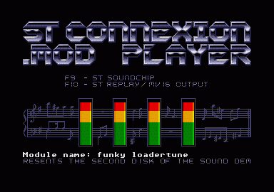
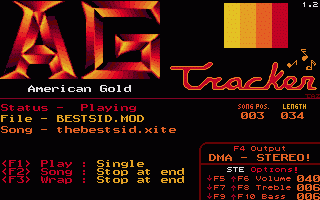
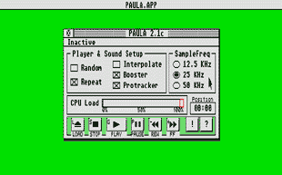
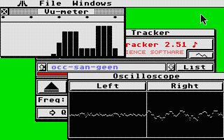
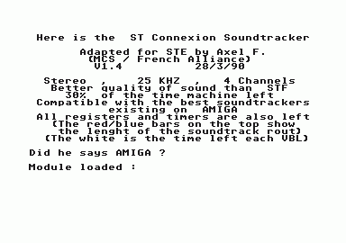

avec des sorties sonores secondaires.
Download it ! (format MSA - 471 Ko)
| (A noter que
le premier soundtracker sur ST a été programmé par Mad Max du groupe TEX à partir de 1987) |
| (En France,
Le groupe ST Connexion fait la première démonstration de son soundtracker dès 1989. Les sources seront distribués un an après) |
Le soundtracker sur 4 voies de STConnexion pour ST.

Le
soundtracker sur 4 voies de STConnexion pour ST
avec des sorties sonores secondaires.
 ST
Connexion disk 2
ST
Connexion disk 2
Download
it !
(format MSA - 471 Ko)

Pour
STF/E, son avantage est de lire plusieurs
modules (sorte de jukebox).
AGTracker v 2.1 d'American Gold
Download
it
! (format PRG - 23 Ko)

Pour
STE/FALCON, accompagné avec des utilitaires pour MODs.
Paula version
2.4 sous GEM
Download it !
(format PRG - avec outils pour module - 84 Ko)

Pour
STE/FALCON, facilement gérable avec les CPx pour le son.
Ultimate
Tracker v 2.51 sous GEM
Download
it !
(format PRG - avec outils & sources - 123 Ko)

Pour
STE/F, adaptation du soundtracker de ST CNX pour le STE.
ST CONNEXION
soundtracker STE by MCS
Download
it !
(format PRG - 7 Ko)
Je tiens à
remercier Klaus (Vantage/STConnexion) pour ses informations et conseils.
[ Divers | Demos | Dentros | Mags | Trackers | Players | Utils ]